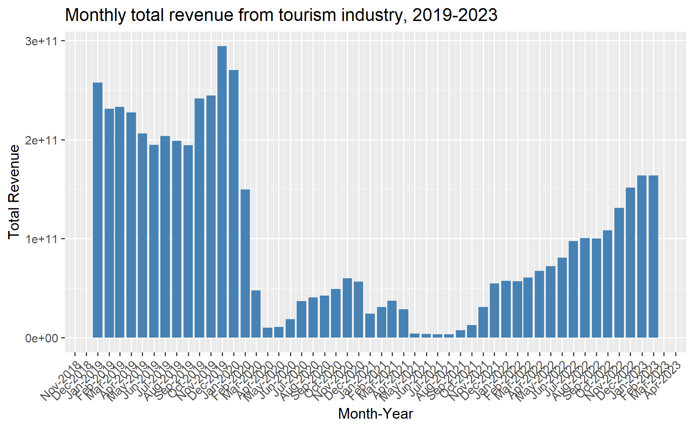
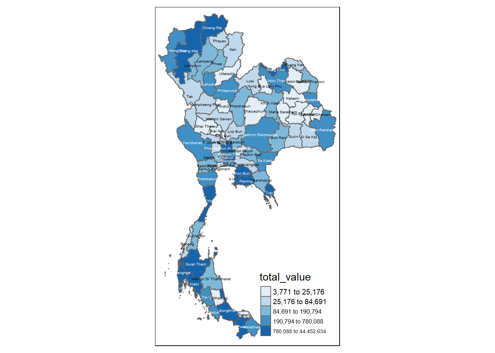

pacman::p_load(sf, spdep, tmap, tidyverse, knitr)
set.seed(123)
tmap_mode('plot')Take Home Exercise 2- Discovering impacts of COVID-19 on Thailand tourism economy at the province level using spatial and spatio-temporal statistics
2 Introduction
Tourism is one of Thailand’s largest industries, accounting for some 20% of the gross domestic product (GDP). In 2019, Thailand earned 90 billion US$ from domestic and international tourism, but the COVID-19 pandemic caused revenues to crash to 24 billion US$ in 2020.
The figure below shows the total revenue for the tourism sector from January 2019 until Feb 2023. The figure reveals that the revenue for the industry have been recovering gradually since September 2021.

However, it is important to note that the tourism economy of Thailand is not evenly distributed- not all provinces make a lot of revenue.
The figure below reveals that the tourism economy of Thailand is carried by five provinces, namely Bangkok, Phuket, Chiang Mai, Sukhothai and Phetchaburi.

2.1 Objectives
The objectives of this exercise are to understand:
if the key indicators of the tourism economy of Thailand are independent from space and space and time.
If the tourism economy is indeed spatial and spatio-temporal dependent. If so, then we would like to detect where the clusters and outliers are, as well as the emerging hot spot/cold spot areas.
2.2 Data and Packages
The data used for this exercise are as follows:
Thailand Domestic Tourism Statistics which is sourced from Kaggle.

Thailand - Subnational Administrative Boundaries which is sourced from Humanitarian Data Exchange. We will use the data at the province level (i.e: ADM1).

The following packages are used:
sf: Provides simple features support for handling and analyzing spatial vector data in R.spdep: A package for spatial dependence and spatial regression analysis, particularly for handling spatial weights.tmap: A flexible visualization package for thematic maps, supporting both static and interactive mapping in R.tidyverse: A collection of R packages designed for data science, emphasizing data manipulation, visualization, and functional programming.knitr: A dynamic report generation tool in R, allowing for the integration of code, results, and narrative in reproducible documents.
We now load these packages into our environment by using the p_load() function of the pacman package.
2.1 Importing the data
2.1.1 Importing the aspatial data
We will now import the aspatial data by implementing the read_csv() function of the readr package as shown in the code chunk below.
tourists=read_csv('data/aspatial/thailand_domestic_tourism_2019_2023.csv')
# Summing the 'value' based on 'province_eng' and 'variable'
summed_data <- tourists %>%
group_by(province_eng, variable) %>%
summarize(total_value = sum(value, na.rm = TRUE))
# View the result
head(summed_data)# A tibble: 6 × 3
# Groups: province_eng [1]
province_eng variable total_value
<chr> <chr> <dbl>
1 Amnat Charoen net_profit_all 1075.
2 Amnat Charoen net_profit_foreign 37.8
3 Amnat Charoen net_profit_thai 1037.
4 Amnat Charoen no_tourist_all 841477
5 Amnat Charoen no_tourist_foreign 12878
6 Amnat Charoen no_tourist_occupied 259406 2.1.2 Importing the geospatial data
We now import the geospatial data using the st_read() function of the sf package.
province=st_read(dsn = "data/geospatial",
layer = "tha_admbnda_adm1_rtsd_20220121")%>%
select(1:5, 17)Reading layer `tha_admbnda_adm1_rtsd_20220121' from data source
`C:\arjxn11\ISSS626-GAA\Take-home_Ex\Take-home_Ex2\data\geospatial'
using driver `ESRI Shapefile'
Simple feature collection with 77 features and 16 fields
Geometry type: MULTIPOLYGON
Dimension: XY
Bounding box: xmin: 97.34336 ymin: 5.613038 xmax: 105.637 ymax: 20.46507
Geodetic CRS: WGS 842.1.3 Performing relational join
We will now join the aspatial and geospatial data by using the left_join() function of the package as showing in the code chunk below.
pro_tourism=left_join(summed_data, province, by= c("province_eng"="ADM1_EN"))2.3 Exploratory Data Analysis
2.3.1 Visualizing regional indicators
After successfully completing the relational join, we can now plot a choropleth map to visualize the tourism in each province in Thailand using various functions of the tmap package.
2.3.1.1 Number of tourists
We first take a look at the number of tourists, both foreign and domestic, across all provinces in Thailand.
tourist_foreign=pro_tourism%>%
filter(variable=='no_tourist_foreign')%>%
filter(!st_is_empty(geometry))
profit_foreigners=st_as_sf(tourist_foreign)
tourist_foreign=st_as_sf(tourist_foreign)
# Create the interactive basemap
basemap01 <- tm_shape(tourist_foreign) +
tm_polygons(col = "total_value", palette = "Blues") +
tm_text("province_eng", size = 0.5)
# Display the interactive map
basemap01tourist_domestic=pro_tourism%>%
filter(variable=='no_tourist_foreign')%>%
filter(!st_is_empty(geometry))
profit_foreigners=st_as_sf(tourist_domestic)
tourist_domestic=st_as_sf(tourist_domestic)
# Create the interactive basemap
basemap02 <- tm_shape(tourist_domestic) +
tm_polygons(col = "total_value", palette = "Blues") +
tm_text("province_eng", size = 0.5)
# Display the interactive map
basemap02
2.3.1.2 Revenue
We now take a look at the revenue generated by foreign and domestic tourists in Thailand
profit_foreigners=pro_tourism%>%
filter(variable=='net_profit_foreign')%>%
filter(!st_is_empty(geometry))
profit_foreigners=st_as_sf(profit_foreigners)
# Create the interactive basemap
basemap <- tm_shape(profit_foreigners) +
tm_polygons(col = "total_value", palette = "Blues", style= 'jenks') +
tm_text("province_eng", size = 0.5)
# Display the interactive map
basemap
profit_domestic=pro_tourism%>%
filter(variable=='net_profit_thai')%>%
filter(!st_is_empty(geometry))
profit_foreigners=st_as_sf(profit_domestic)
profit_domestic=st_as_sf(profit_domestic)
# Create the interactive basemap
basemap2 <- tm_shape(profit_domestic) +
tm_polygons(col = "total_value", palette = "Blues", style='jenks') +
tm_text("province_eng", size = 0.5)
# Display the interactive map
basemap2
Bangkok seems to be the most lucrative province for both foreign and domestic tourists.
basemap <- tm_shape(profit_domestic) +
tm_polygons() +
tm_text("province_eng", size=0.5)
gdppc <- qtm(profit_domestic, "total_value")
tmap_arrange(basemap, gdppc, asp=1, ncol=2)2.4 Spatial Analysis
We now implement the poly2nb() function of the spdep package to compute contiguity weight matrices for the study area selected.
Using this function, we are able to build a ‘neighbors list’ based on regions with contiguous boundaries.
In this function, we will pass an argument, ‘queen’, that can be set as either TRUE (default) or FALSE. If the ‘queen’ argument is not explicitly set to FALSE, the function returns a list of first order neighbors using the Queen criteria.
You may refer to the spdep package documentation here to learn more about its functions and arguments.
2.4.1 Spatial Weights
2.4.1.1 Computing Contiguity Spatial Weights
We use the poly2nb() function as shown in the code chunk below. Using this, we are able to compute a Queen contiguity weight matrix.
# Rook contiguity
wm_r <- poly2nb(profit_foreigners, queen=FALSE)
write_rds(wm_r, 'data/rds/wm_r_pro_foreign')
# Queen Contiguity
wm_q <- poly2nb(profit_foreigners, queen=TRUE)
write_rds(wm_q, 'data/rds/wm_q_pro_foreign')wm_r_pro_foreign=read_rds("data/rds/wm_r_pro_foreign")
summary(wm_r_pro_foreign)Neighbour list object:
Number of regions: 69
Number of nonzero links: 284
Percentage nonzero weights: 5.965133
Average number of links: 4.115942
1 region with no links:
42
2 disjoint connected subgraphs
Link number distribution:
0 1 2 3 4 5 6 7 9
1 2 7 17 15 11 12 3 1
2 least connected regions:
46 63 with 1 link
1 most connected region:
61 with 9 linkswm_q_pro_foreign=read_rds("data/rds/wm_q_pro_foreign")
summary(wm_q_pro_foreign)Neighbour list object:
Number of regions: 69
Number of nonzero links: 284
Percentage nonzero weights: 5.965133
Average number of links: 4.115942
1 region with no links:
42
2 disjoint connected subgraphs
Link number distribution:
0 1 2 3 4 5 6 7 9
1 2 7 17 15 11 12 3 1
2 least connected regions:
46 63 with 1 link
1 most connected region:
61 with 9 linkswm_r_pro_foreign=read_rds("data/rds/wm_r_pro_foreign")
summary(wm_r_pro_foreign)Neighbour list object:
Number of regions: 69
Number of nonzero links: 284
Percentage nonzero weights: 5.965133
Average number of links: 4.115942
1 region with no links:
42
2 disjoint connected subgraphs
Link number distribution:
0 1 2 3 4 5 6 7 9
1 2 7 17 15 11 12 3 1
2 least connected regions:
46 63 with 1 link
1 most connected region:
61 with 9 links2.4.1.2 Visualizing Contiguity Spatial Weights
A connectivity graph takes a point and displays a line to each neighboring point. We are working with polygons in this situation, so we need to ensure that our points are in order to produce our connectivity graphs.
Usually, the method of choice will be polygon centroids. We calculate using the sf package before moving onto the graphs. Getting latitude and longitude of the Polygon Centroids.
We need points to associate with each polygon before we can make our connectivity graph. It won’t be as simple as applying the st_centroid() function of the sf sf object: us.bound. We need the coordinates in a separate data-frame for this to work.
To do this, we will use a mapping function which will apply a given function to each element of a vector and returns a vector of the same length. Our input vector will be the geometry column of us.bound.
The function that we implement in this situation will be st_centroid().
We will be using the map_dbl variation of map from the purrr package.
We start by extracting the longitude and latitude values for foreign travellers.
longitude_profit_foreign= map_dbl(profit_foreigners$geometry, ~st_centroid(.x)[[1]])
latitude_profit_foreign= map_dbl(profit_foreigners$geometry, ~st_centroid(.x)[[2]])Now that we have the latitude and longitude values, we can use the cbind() function to put the longitude and latitude values into the same object, coords.
coords_profit_foreign <- cbind(longitude_profit_foreign, latitude_profit_foreign)We use the head() function to verify if coords is in the correct format.
head(coords_profit_foreign) longitude_profit_foreign latitude_profit_foreign
[1,] 104.7414 15.89261
[2,] 100.3485 14.62354
[3,] 100.6235 13.77183
[4,] 103.7109 18.14879
[5,] 101.4254 13.60649
[6,] 101.8194 16.03212longitude_profit_domesticlatitude_profit_domestic=We now create the coords object.
coords_profit_domesticWe can now visualize it using the plot() function as shown in the following code chunks.
plot(profit_foreigners$geometry, border="lightgrey")
plot(wm_r_pro_foreign, coords_profit_foreign, pch = 19, cex = 0.6, add = TRUE, col = "purple")plot(profit_domestic$geometry, border="lightgrey")
plot(wm_r_pro_domestic, coords_profit_domestic, pch = 19, cex = 0.6, add = TRUE, col = "purple")2.4.1.3 Computing Distance Based Neighbors
In order to derive distance-based weight matrices, we will implement the dnearneigh() function of the spdep package.
This function identifies neighbors of region points by Euclidean Distance with a distance band with lower d1 and upper d2 bounds controlled by the bounds= argument.
If un-projected coordinates are used and either specified in the coordinates object x or with x as a two column matrix and longlat=TRUE, great circle distances in km will be calculated assuming the WGS84 reference ellipsoid.
2.4.1.3.1 Determining cut-off distance
We must first determine the upper limit for the distance band by using the steps shown below:
Find k Nearest Neighbours: Use
knearneigh()from thespdeppackage to get a matrix of indices for the k nearest neighbours of each point.Convert to Neighbours List: Convert the
knnobject returned byknearneigh()into a neighbours list of classnbusingknn2nb(). This list contains integer vectors with neighbour region number IDs.Calculate Edge Lengths: Use
nbdists()fromspdepto return the lengths of neighbour relationship edges. The function returns distances in the units of the coordinates if projected, otherwise in kilometers.Flatten the List: Remove the list structure of the returned object using
unlist()
#coords <- coordinates(hunan)
k1_pro_foreign <- knn2nb(knearneigh(coords_profit_foreign))
k1dists_pro_foreign <- unlist(nbdists(k1_pro_foreign, coords_profit_foreign, longlat = TRUE))
summary(k1dists_pro_foreign) Min. 1st Qu. Median Mean 3rd Qu. Max.
21.55 52.52 69.06 66.79 77.42 124.72 From the output above, we can infer that the largest first nearest neighbor distance is just under 125KM. Using this value, 125KM, as the upper threshold gives certainty that all units will have at least one neighbor.
2.4.1.3.2 Computing Distance Based Weight Matrix
We now implement the dnearneigh() function to compute the distance weight matrix.
wm_d62_pro_foreign <- dnearneigh(coords_profit_foreign, 0, 125, longlat = TRUE)
wm_d62_pro_foreignNeighbour list object:
Number of regions: 69
Number of nonzero links: 368
Percentage nonzero weights: 7.729469
Average number of links: 5.333333
2 disjoint connected subgraphsFrom the output above, we infer that there are 69 distinct regions, as we identified earlier. There are 368 connections between regions where the distance is within the threshold that we have set. 7.73% of all possible region pairs have a connection. On average, each region is connected to approximately 5.3 other regions.
We now use the combination of table() and card() functions from the spdep package to display the structure of the weight matrix.
table(profit_foreigners$province_eng, card(wm_d62_pro_foreign))
1 2 3 4 5 6 7 8 9 10 11 12 13 14
Amnat Charoen 0 0 0 1 0 0 0 0 0 0 0 0 0 0
Ang Thong 0 0 0 0 0 0 0 0 0 0 0 0 1 0
Bangkok 0 0 0 0 0 0 0 0 0 0 0 0 1 0
Bueng Kan 0 0 0 1 0 0 0 0 0 0 0 0 0 0
Chachoengsao 0 0 0 0 0 0 0 0 1 0 0 0 0 0
Chaiyaphum 0 0 1 0 0 0 0 0 0 0 0 0 0 0
Chanthaburi 0 0 0 1 0 0 0 0 0 0 0 0 0 0
Chiang Mai 0 0 1 0 0 0 0 0 0 0 0 0 0 0
Chiang Rai 1 0 0 0 0 0 0 0 0 0 0 0 0 0
Chumphon 1 0 0 0 0 0 0 0 0 0 0 0 0 0
Kalasin 0 0 0 0 0 0 0 1 0 0 0 0 0 0
Kamphaeng Phet 0 0 0 0 1 0 0 0 0 0 0 0 0 0
Kanchanaburi 0 1 0 0 0 0 0 0 0 0 0 0 0 0
Khon Kaen 0 0 0 1 0 0 0 0 0 0 0 0 0 0
Krabi 0 0 0 1 0 0 0 0 0 0 0 0 0 0
Lampang 0 0 0 0 0 1 0 0 0 0 0 0 0 0
Lamphun 0 0 0 0 1 0 0 0 0 0 0 0 0 0
Loei 1 0 0 0 0 0 0 0 0 0 0 0 0 0
Mae Hong Son 0 1 0 0 0 0 0 0 0 0 0 0 0 0
Maha Sarakham 0 0 1 0 0 0 0 0 0 0 0 0 0 0
Mukdahan 0 0 0 0 0 1 0 0 0 0 0 0 0 0
Nakhon Nayok 0 0 0 0 0 0 0 0 0 1 0 0 0 0
Nakhon Pathom 0 0 0 0 0 0 0 0 0 0 0 0 1 0
Nakhon Phanom 0 0 0 1 0 0 0 0 0 0 0 0 0 0
Nakhon Ratchasima 0 1 0 0 0 0 0 0 0 0 0 0 0 0
Nakhon Sawan 0 0 0 0 0 1 0 0 0 0 0 0 0 0
Nakhon Si Thammarat 0 0 0 1 0 0 0 0 0 0 0 0 0 0
Nan 0 1 0 0 0 0 0 0 0 0 0 0 0 0
Narathiwat 0 1 0 0 0 0 0 0 0 0 0 0 0 0
Nong Khai 0 0 1 0 0 0 0 0 0 0 0 0 0 0
Nonthaburi 0 0 0 0 0 0 0 0 0 0 0 0 0 1
Pathum Thani 0 0 0 0 0 0 0 0 0 0 0 0 1 0
Pattani 0 0 1 0 0 0 0 0 0 0 0 0 0 0
Phatthalung 0 0 0 1 0 0 0 0 0 0 0 0 0 0
Phayao 0 0 0 1 0 0 0 0 0 0 0 0 0 0
Phetchabun 0 0 1 0 0 0 0 0 0 0 0 0 0 0
Phetchaburi 0 0 0 0 1 0 0 0 0 0 0 0 0 0
Phichit 0 0 0 1 0 0 0 0 0 0 0 0 0 0
Phitsanulok 0 0 0 1 0 0 0 0 0 0 0 0 0 0
Phra Nakhon Si Ayutthaya 0 0 0 0 0 0 0 0 0 0 0 1 0 0
Phrae 0 0 0 0 0 1 0 0 0 0 0 0 0 0
Phuket 1 0 0 0 0 0 0 0 0 0 0 0 0 0
Prachuap Khiri Khan 1 0 0 0 0 0 0 0 0 0 0 0 0 0
Ranong 0 1 0 0 0 0 0 0 0 0 0 0 0 0
Ratchaburi 0 0 0 0 0 0 0 1 0 0 0 0 0 0
Rayong 0 0 1 0 0 0 0 0 0 0 0 0 0 0
Roi Et 0 0 0 0 0 1 0 0 0 0 0 0 0 0
Sa Kaeo 0 1 0 0 0 0 0 0 0 0 0 0 0 0
Sakon Nakhon 0 0 0 0 0 1 0 0 0 0 0 0 0 0
Samut Prakan 0 0 0 0 0 0 0 0 0 0 0 0 1 0
Samut Sakhon 0 0 0 0 0 0 0 0 0 0 1 0 0 0
Samut Songkhram 0 0 0 0 0 0 0 0 1 0 0 0 0 0
Saraburi 0 0 0 0 0 0 0 0 0 0 1 0 0 0
Satun 0 0 1 0 0 0 0 0 0 0 0 0 0 0
Sing Buri 0 0 0 0 0 0 0 0 0 1 0 0 0 0
Songkhla 0 0 0 0 1 0 0 0 0 0 0 0 0 0
Sukhothai 0 0 0 0 0 0 1 0 0 0 0 0 0 0
Suphan Buri 0 0 0 0 0 0 0 0 0 0 0 0 1 0
Surat Thani 0 0 1 0 0 0 0 0 0 0 0 0 0 0
Surin 1 0 0 0 0 0 0 0 0 0 0 0 0 0
Tak 0 1 0 0 0 0 0 0 0 0 0 0 0 0
Trang 0 0 0 0 1 0 0 0 0 0 0 0 0 0
Trat 1 0 0 0 0 0 0 0 0 0 0 0 0 0
Ubon Ratchathani 0 1 0 0 0 0 0 0 0 0 0 0 0 0
Udon Thani 0 0 0 0 1 0 0 0 0 0 0 0 0 0
Uthai Thani 0 0 0 0 0 1 0 0 0 0 0 0 0 0
Uttaradit 0 0 0 0 1 0 0 0 0 0 0 0 0 0
Yala 0 0 1 0 0 0 0 0 0 0 0 0 0 0
Yasothon 0 0 0 0 1 0 0 0 0 0 0 0 0 0Next, we implement the n.comp.nb() function to identify the number of connected components in a neighbor list object of class nb.
Note: A connected component is a subset of regions where each region is reachable from any other region within the same subset. The function returns an object that includes the number of connected components (nc) and a vector indicating the component membership for each region.
n_comp_pro_foreign <- n.comp.nb(wm_d62_pro_foreign)
n_comp_pro_foreign$nc[1] 2table(n_comp_pro_foreign$comp.id)
1 2
56 13 2.4.1.3.3 Plotting fixed distance weight matrix
We now plot the distance weight matrix using the plot() function.
plot(profit_foreigners$geometry, border="lightgrey")
plot(wm_d62_pro_foreign, coords_profit_foreign, add=TRUE)
plot(k1_pro_foreign, coords_profit_foreign, add=TRUE, col="purple", length=0.08)As identified earlier, we see two distinct groups. The upper 56 and the bottom 13.
par(mfrow=c(1,2))
plot(profit_foreigners$geometry, border="lightgrey", main="1st nearest neighbours")
plot(k1_pro_foreign, coords_profit_foreign, add=TRUE, col="red", length=0.08)
plot(profit_foreigners$geometry, border="lightgrey", main="Distance link")
plot(wm_d62_pro_foreign, coords_profit_foreign, add=TRUE, pch = 19, cex = 0.6)2.4.1.4 Weights based on Inversed Distance Weighting (IDW)
We first compute the distances between areas by implementing the nbdists() function of the spdep package.
dist_pro_foreign <- nbdists(wm_r_pro_foreign, coords_profit_foreign, longlat = TRUE)
ids_pro_foreign <- lapply(dist_pro_foreign, function(x) 1/(x))
ids_pro_foreign[[1]]
[1] 0.01283122 0.01137165 0.02317374
[[2]]
[1] 0.02756509 0.03127482 0.02029286
[[3]]
[1] 0.01128043 0.01701948 0.03322088 0.03024035 0.04641391 0.02007407
[[4]]
[1] 0.008785487 0.010451301 0.011784417
[[5]]
[1] 0.011280434 0.009026604 0.013713812 0.010525478 0.010089340 0.012920254
[[6]]
[1] 0.010963897 0.008134706 0.013026280
[[7]]
[1] 0.009026604 0.013102472 0.009765844 0.013223766
[[8]]
[1] 0.005984037 0.010253006 0.012763865 0.013589149 0.004349372
[[9]]
[1] 0.005984037 0.005799456 0.013165076
[[10]]
[1] 0.005327427 0.017306975 0.007000767
[[11]]
[1] 0.008769672 0.011775171 0.010437208 0.012343675 0.011493123 0.008361253
[[12]]
[1] 0.010254426 0.011527636 0.007714179 0.009533663 0.011111643
[[13]]
[1] 0.007385957 0.007716901 0.010982604 0.004211749 0.010358229
[[14]]
[1] 0.010963897 0.008769672 0.006691737 0.012916807 0.005943019 0.006514320
[7] 0.008588872
[[15]]
[1] 0.01132654 0.00997081 0.01085922
[[16]]
[1] 0.010253006 0.005799456 0.015806184 0.008104541 0.016638036 0.008359249
[7] 0.005157708
[[17]]
[1] 0.012763865 0.015806184 0.006403244
[[18]]
[1] 0.006691737 0.007140588 0.007375029 0.007976693 0.007671985
[[19]]
[1] 0.013589149 0.004073493
[[20]]
[1] 0.011775171 0.012916807 0.014293885 0.007462094
[[21]]
[1] 0.012831217 0.010437208 0.010934747 0.009660859 0.008504967 0.013119927
[[22]]
[1] 0.013713812 0.007685469 0.018047546 0.020717010
[[23]]
[1] 0.017019481 0.007385957 0.031941419 0.015333035 0.014028638 0.024413177
[7] 0.012579923
[[24]]
[1] 0.008785487 0.010934747 0.015545066
[[25]]
[1] 0.008134706 0.005943019 0.007685469 0.007605151 0.008117703
[[26]]
[1] 0.010254426 0.007982010 0.014915995 0.011395871 0.005405036 0.012326369
[[27]]
[1] 0.011326537 0.009956219 0.005544296 0.009359481 0.010554311
[[28]]
[1] 0.012495409 0.009206376 0.007880812
[[29]]
[1] 0.01359979 0.01841909
[[30]]
[1] 0.010451301 0.007140588 0.008232097 0.017483864
[[31]]
[1] 0.03322088 0.03194142 0.02860548 0.02049667
[[32]]
[1] 0.03024035 0.01052548 0.01804755 0.02860548 0.02835278 0.01391843
[[33]]
[1] 0.01359979 0.01090219 0.01634790
[[34]]
[1] 0.009956219 0.013192981 0.012040582 0.019039684
[[35]]
[1] 0.013165076 0.008104541 0.012495409 0.008669969
[[36]]
[1] 0.013026280 0.006514320 0.007375029 0.007982010 0.011614531 0.009899588
[[37]]
[1] 0.009013905 0.015334899 0.016262271
[[38]]
[1] 0.01152764 0.01491600 0.01161453 0.01209489
[[39]]
[1] 0.007714179 0.007976693 0.009899588 0.012094889 0.010632695 0.011816759
[[40]]
[1] 0.02756509 0.01533303 0.02049667 0.02835278 0.01630089 0.01339948
[[41]]
[1] 0.016638036 0.009206376 0.008669969 0.009069811 0.014433186
[[42]]
numeric(0)
[[43]]
[1] 0.005327427 0.009013905
[[44]]
[1] 0.01730698 0.00908563
[[45]]
[1] 0.007716901 0.014028638 0.015334899 0.014563573 0.023042875
[[46]]
[1] 0.01310247
[[47]]
[1] 0.012343675 0.014293885 0.009660859 0.008645806 0.017784128
[[48]]
[1] 0.010089340 0.009765844 0.007605151
[[49]]
[1] 0.011784417 0.011493123 0.008504967 0.015545066 0.008232097 0.009781624
[[50]]
[1] 0.04641391 0.01292025
[[51]]
[1] 0.02007407 0.02441318 0.01456357 0.02941852
[[52]]
[1] 0.01626227 0.02304288 0.02941852
[[53]]
[1] 0.020717010 0.008117703 0.013918429 0.016300886
[[54]]
[1] 0.01319298 0.01448029 0.01168217
[[55]]
[1] 0.03127482 0.01139587 0.01688512
[[56]]
[1] 0.005544296 0.010902192 0.012040582 0.014480293 0.008955556
[[57]]
[1] 0.009533663 0.008359249 0.010632695 0.009069811 0.008697288 0.009934394
[[58]]
[1] 0.02029286 0.01098260 0.01257992 0.01339948 0.01688512 0.01076819
[[59]]
[1] 0.007000767 0.009970810 0.009359481 0.009085630
[[60]]
[1] 0.007462094 0.008645806
[[61]]
[1] 0.004349372 0.011111643 0.004211749 0.005157708 0.006403244 0.004073493
[7] 0.005405036 0.008697288 0.005949594
[[62]]
[1] 0.01085922 0.01055431 0.01903968 0.01168217
[[63]]
[1] 0.01322377
[[64]]
[1] 0.011371651 0.008739397
[[65]]
[1] 0.008361253 0.008588872 0.007671985 0.017483864 0.009781624
[[66]]
[1] 0.010358229 0.012326369 0.010768191 0.005949594
[[67]]
[1] 0.007880812 0.011816759 0.014433186 0.009934394
[[68]]
[1] 0.018419095 0.016347902 0.008955556
[[69]]
[1] 0.023173744 0.013119927 0.017784128 0.0087393972.4.1.5 Row-Standardized Weights Matrix
We now need to assign weights to each neighboring polygon. We use equal weights (style=“W”), where each neighboring polygon is assigned a weight of 1 divided by the number of neighbors.
This means each neighboring county’s weight is calculated as 1/(# of neighbors), and these weights are then used to sum the weighted income values.
While this method is intuitive for summarizing neighbors’ values, it has a drawback: polygons at the edges of the study area may rely on fewer neighbors, potentially skewing the spatial autocorrelation results.
Note: For simplicity, we’ll use the style=“W” option in this example, but be aware that more robust options, such as style=“B”, are available.
rswm_r_pro_foreign <- nb2listw(wm_r_pro_foreign, style="W", zero.policy = TRUE)
rswm_r_pro_foreignCharacteristics of weights list object:
Neighbour list object:
Number of regions: 69
Number of nonzero links: 284
Percentage nonzero weights: 5.965133
Average number of links: 4.115942
1 region with no links:
42
2 disjoint connected subgraphs
Weights style: W
Weights constants summary:
n nn S0 S1 S2
W 68 4624 68 36.26116 284.0635Setting the argument zero.policy to TRUE allows for lists of non-neighbors. This should be used with caution as users may not be aware of missing neighbors in their data however setting zero,policy to FALSE would return an error.
The code chunk below is implemented to check the weights of the first polygons three neighbors type:
rswm_r_pro_foreign$weights[10][[1]]
[1] 0.3333333 0.3333333 0.3333333Each neighbor is assigned a 0.33 of the total weight. This means that when R computes the average neighboring income values, each neighbor’s income will be multiplied by 0.125 before being tallied.
Using the same method, we derive a row standardized distance weight matrix by using the code chunk below.
rswm_ids_pro_foreign <- nb2listw(wm_r_pro_foreign, glist=ids_pro_foreign, style="B", zero.policy=TRUE)
rswm_ids_pro_foreignCharacteristics of weights list object:
Neighbour list object:
Number of regions: 69
Number of nonzero links: 284
Percentage nonzero weights: 5.965133
Average number of links: 4.115942
1 region with no links:
42
2 disjoint connected subgraphs
Weights style: B
Weights constants summary:
n nn S0 S1 S2
B 68 4624 3.603816 0.1156751 0.97088912.4.1.6 Application of Spatial Weight Matrix
We now create four different spatial lagged variables:
spatial lag with row-standardized weights
spatial lag as a sum of neighbouring values
spatial window average
spatial window sum
2.4.1.6.1 Spatial Lag With Row-Standardized Weights
We now compute the average neighbor profit value for each polygon. We often refer to these values as Spatially Lagged Values.
pro_foreign.lag <- lag.listw(rswm_r_pro_foreign, profit_foreigners$total_value)
pro_foreign.lag [1] 8515.193 17968.737 9786.125 8146.420 134596.605 38955.723
[7] 30027.315 25849.308 69950.727 49495.860 14466.082 12682.008
[13] 12285.500 17722.284 32856.583 45153.527 74359.923 24181.276
[19] 105254.185 13518.028 3746.675 23303.505 127335.297 5904.817
[25] 18962.564 9199.730 41815.892 5435.180 3151.225 11707.842
[31] 199104.537 139465.317 23475.267 34077.745 27604.423 16031.888
[37] 38026.663 15162.938 9194.675 11038.343 7792.872 0.000
[43] 46017.585 31137.765 36364.686 20841.120 4422.484 30034.113
[49] 9350.865 377986.320 193862.645 30662.133 28195.245 29101.100
[55] 10132.620 13507.610 11402.520 22217.052 32074.963 3159.425
[61] 35931.461 33712.050 20841.120 1412.345 14707.668 30176.722
[67] 11022.135 22918.337 7102.637We can append the spatially lagged profit values onto our profit_foreigners sf data-frame by using the code chunk shown below.
lag.list_pro_foreign <- list(profit_foreigners$province_eng, lag.listw(rswm_r_pro_foreign, profit_foreigners$total_value))
lag.res_pro_foreign <- as.data.frame(lag.list_pro_foreign)
colnames(lag.res_pro_foreign) <- c("province_eng", "lag Profit")
profit_foreigners <- left_join(profit_foreigners,lag.res_pro_foreign)We now plot the actual profit and spatial lag profits side by side to facilitate comparison.
pro_foreign <- qtm(profit_foreigners, "total_value")
lag_pro_foreign <- qtm(profit_foreigners, "lag Profit")
tmap_arrange(pro_foreign, lag_pro_foreign, asp=1, ncol=2)
We see a difference in the surrounding regions of Bangkok as well as Mae Hong Son, all of which are in a higher band as compared to the non-spatially lagged values.
2.4.1.6.2 Spatial Lag as a sum of neighboring values
We can calculate spatial lag as a sum of neighboring values by assigning binary weights. For this, we must apply a function that will assign binary weights to our neighbors list. We then use the glist argument in the nb2listw function to explicitly assign these weights.
We first apply a function that assigns a value of 1 per neighbor. This is done with help of lapply(), which helps manipulate the neighbors structure. It basically applies a function across each value in the neighbors structure.
b_weights <- lapply(wm_r_pro_foreign, function(x) 0*x + 1)
b_weights2 <- nb2listw(wm_r_pro_foreign,
glist = b_weights,
style = "B")
b_weights2